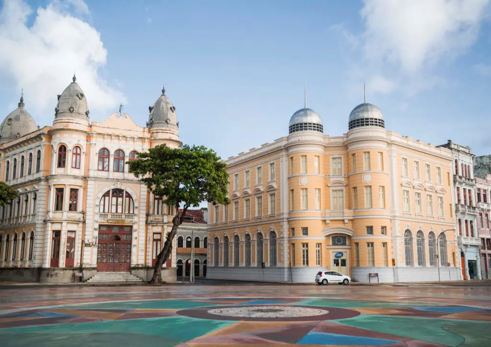
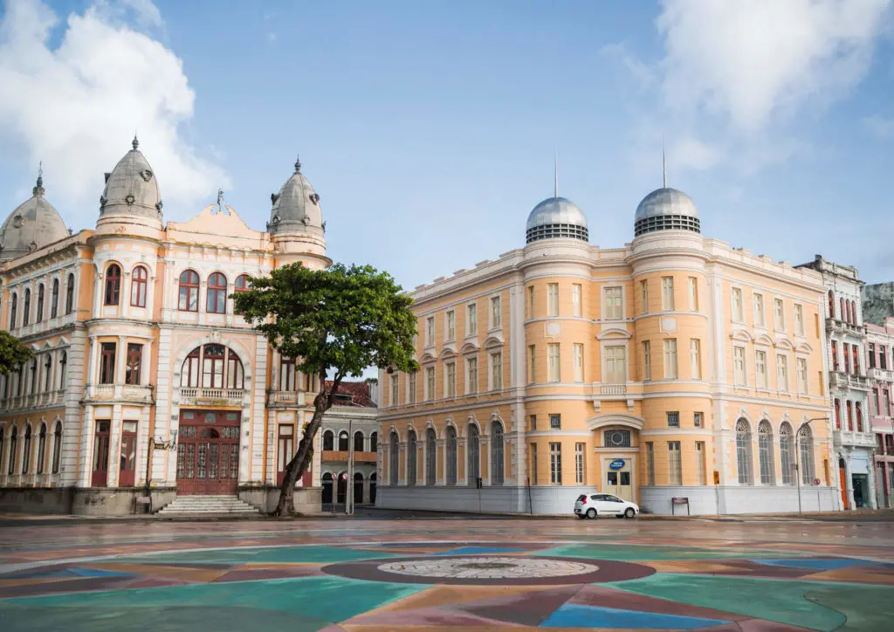

Área histórica de Recife de onde partem os caminhos de Pernambuco
A Praça do Marco Zero não é apenas o epicentro cultural de Recife, mas também o início de todos os caminhos de Pernambuco. Neste artigo, vamos te contar um pouco do que rola no local e nos arredores dessa região histórica e ao mesmo tempo contemporânea, por ser tão frequentada e amada pelos moradores da cidade.
Praça Barão do Rio Branco
Conhecida pelo seu nome popular – Praça do Marco Zero, na verdade, é um apelido – o local se chama Praça Barão do Rio Branco e está localizada no Bairro do Recife, o Centro Histórico da cidade, que também atende por outra alcunha, mais popular: Recife Antigo.
Além de dar o nome oficial à praça, o Barão do Rio Branco também está representado no local por uma estátua em bronze de 2,80m de altura, feita pelo escultor francês Félix Charpentier.
O nome de Praça do Marco Zero se popularizou por conta da instalação, em 31 de janeiro de 1938, do Marco Zero de Recife, doado à cidade pelo Automóvel Clube de Pernambuco. A placa redonda posicionada na praça simboliza o centro geográfico de onde partem as medições para todas as estradas de Pernambuco.

.jpg)
 
